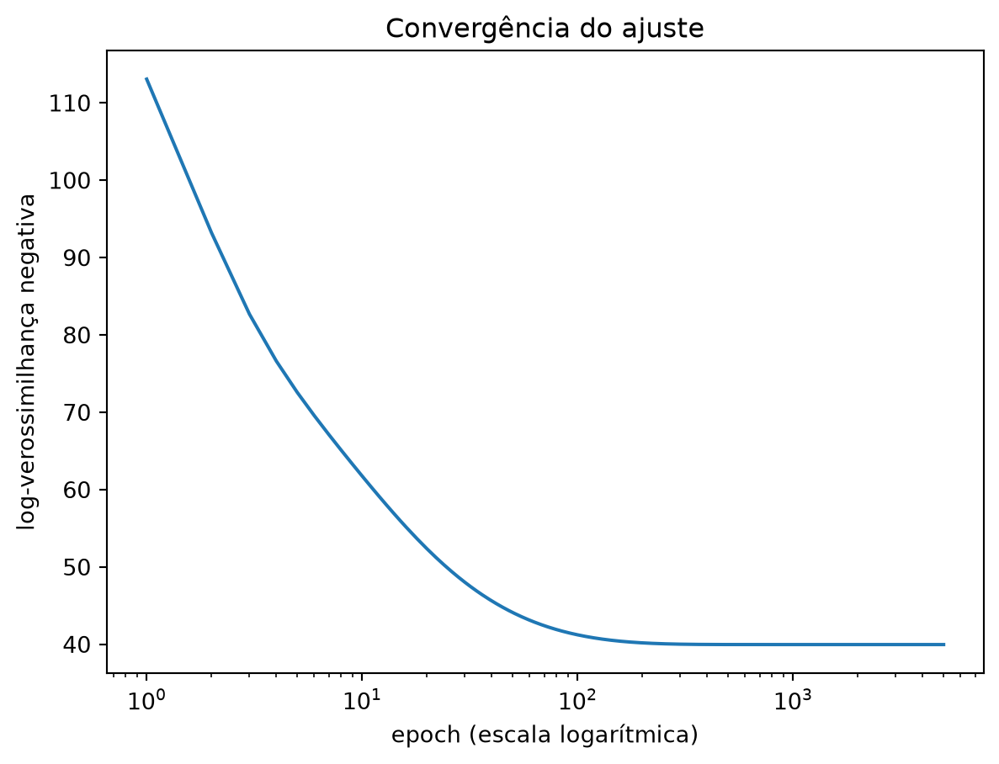

from scratch.logistic_regression import (
xs, ys, logistic, negative_log_likelihood, negative_log_gradient,
)
len(xs), xs[0], ys[0](200, [1.0, 0.7, 48000], 1)Esta seção corresponde a Applying the Model, do capítulo 16 de Grus (2019).
Temos todas as peças: os dados, a função logística, a perda e o seu gradiente. Falta ajustar — e é aqui que este capítulo se separa dos dois anteriores.
A seção 11.1 ajustou uma reta com duas médias, uma covariância e uma variância — sem laço nenhum. A seção 12.3 usou gradiente descendente para a regressão múltipla, mas deixou registrado que a solução exata existia: bastaria resolver um sistema linear, o que aquele capítulo não fez por decisão de escopo, não por impossibilidade.
Aqui a situação muda de natureza. A condição de otimalidade da regressão logística — o gradiente igualado a zero — envolve \(\beta\) dentro de uma exponencial, e não há manipulação algébrica que isole \(\beta\) de lá. Não é uma conta pesada demais para caber num chunk: é uma conta que não existe. A seção 5.5 prometeu que este dia chegaria, e chegou. Para este modelo — e para as redes neurais dos capítulos 15 e 16 —, o gradiente descendente deixa de ser a alternativa prática e passa a ser o único caminho até um ajuste.
(200, [1.0, 0.7, 48000], 1)Cada página deste livro roda num kernel próprio, então as funções escritas na seção anterior não existem aqui. scratch/logistic_regression.py traz exatamente o mesmo código — é o módulo do livro-texto, copiado literalmente —, junto com os dados. Importar dali não é atalho: é o mesmo logistic, o mesmo negative_log_likelihood e o mesmo negative_log_gradient que você acabou de ver serem construídos.
A mesma regra explica a repetição que vem pela frente. Funções importam-se de um módulo; valores calculados, não — e rescale, beta e a divisão treino/teste são valores. Por isso as seções 13.4 e 13.5 refazem, cada uma, o rescale e os 5.000 epochs deste ajuste, com a mesma semente e os mesmos hiperparâmetros, para chegarem ao mesmo beta que sai aqui. É repetição de encanamento, não de conteúdo: lá o código vem escondido, e as duas seções apontam de volta para este callout.
O gradiente descendente precisa de um ponto de partida. Como sempre, um chute aleatório, com semente fixa:
[0.8444218515250481, 0.7579544029403025, 0.420571580830845]Antes de gastar 5.000 passos, vale avaliar a perda uma vez, nesse ponto de partida. É a conta mais barata do capítulo: negative_log_likelihood(xs, ys, beta).
ValueError: math domain errorNão houve ajuste ruim, convergência lenta nem coeficiente estranho. O programa quebrou antes do primeiro passo. Vale rastrear exatamente onde.
ponto 0: x = [1.0, 0.7, 48000], y = 1
dot(x, beta) = 20188.81
logistic(...) = 1.0
1 - logistic(...) = 0.0
ponto 1: x = [1.0, 1.9, 48000], y = 0
dot(x, beta) = 20189.72
logistic(...) = 1.0
1 - logistic(...) = 0.0O culpado é o salário. O primeiro usuário tem 48.000, e o coeficiente inicial sorteado para essa coluna foi 0,42 — o produto escalar dá 20.188,81, dominado inteiramente por aquela parcela. A experiência, que vale 0,7, contribui com 0,53; o termo constante, com 0,84. As outras duas colunas simplesmente não participam da conta.
E logistic(20188.81) é 1.0, exato, pela razão que a seção anterior mediu: qualquer entrada acima de 36,74 satura.
Repare no que acontece com os dois primeiros pontos, porque eles falham de maneiras diferentes:
ponto 0 (y = 1): perda = -0.0
ponto 1 (y = 0): ValueError: math domain errorO ponto 0 tem y = 1, então a perda dele é -math.log(logistic(...)), que é -log(1.0), que é -0.0. Nenhum erro: o modelo declara certeza absoluta de que este usuário paga, e a perda registra zero — perfeição — para um \(\beta\) que foi sorteado ao acaso segundos atrás. Se todos os rótulos fossem 1, este ajuste reportaria perda zero e ninguém veria problema nenhum.
O ponto 1 tem y = 0. A perda dele é -math.log(1 - logistic(...)), e 1 - 1.0 é 0.0. Aí sim: ValueError: math domain error.
A falha barulhenta é a sorte deste conjunto de dados — 148 dos 200 usuários têm y = 0, então o erro aparece no segundo ponto e é impossível de ignorar. A falha silenciosa é a que deveria assustar mais: ela não interrompe nada e produz um número que parece ótimo.
Vale parar aqui, porque este é o ponto do capítulo que sobrevive depois que o assunto “regressão logística” for esquecido.
LogisticRegression().fit(X, y) não teria produzido nenhuma das duas falhas. Nem o ValueError: a biblioteca calcula a perda por rotinas numericamente estáveis, que nunca chegam a formar 1 - 1.0. Nem o -0.0: ela sequer expõe a perda de um ponto isolado — devolve coeficientes, previsões e um score, e mais nada. Os dois números que você acabou de ver só são visíveis de dentro. De fora, o mesmo ajuste teria rodado até o fim, sem uma linha de aviso, e devolvido um vetor de coeficientes com cara de resposta.
Generalize, porque a lição não é sobre a função logística: o número na sua tela pode ser mentira, e a tela não tem como avisar. Uma perda de zero é o que você esperaria de um modelo perfeito e é também o que sai de um \(\beta\) sorteado ao acaso quando a aritmética satura. Os dois casos produzem o mesmo 0.0, indistinguíveis. Quem só chama a função não tem de onde tirar a diferença; quem sabe que a logística tem um teto em float64 e que a perda vira -log(1.0) sabe onde olhar. É por isso que esta disciplina constrói o código do zero, e é o motivo de esta seção ser a mais importante do capítulo.
O conserto é o mesmo passo que a seção 13.1 já tinha dado por higiene, e que aqui é a diferença entre existir um modelo e o programa quebrar: reescalonar. A função vem da seção 7.6 e é escrita em linha, porque o módulo onde ela mora não pode ser importado neste livro:
from typing import List, Tuple
from scratch.linear_algebra import Vector, vector_mean
from scratch.statistics import standard_deviation
def scale(data: List[Vector]) -> Tuple[Vector, Vector]:
"""devolve a média e o desvio padrão de cada posição"""
dim = len(data[0])
means = vector_mean(data)
stdevs = [standard_deviation([vector[i] for vector in data])
for i in range(dim)]
return means, stdevs
def rescale(data: List[Vector]) -> List[Vector]:
"""cada posição passa a ter média 0 e desvio padrão 1"""
dim = len(data[0])
means, stdevs = scale(data)
rescaled = [v[:] for v in data]
for v in rescaled:
for i in range(dim):
if stdevs[i] > 0:
v[i] = (v[i] - means[i]) / stdevs[i]
return rescaled
rescaled_xs = rescale(xs)
[round(v, 4) for v in rescaled_xs[0]][1.0, -1.5095, -1.2036]O mesmo primeiro ponto, o mesmo \(\beta\) sorteado, agora sem drama:
dot(x, beta) = -0.8059
logistic(...) = 0.3088
perda no conjunto todo = 212.1942De 20.188,81 para −0,8059. Nada mudou no modelo, no otimizador ou nos dados — a mesma pessoa, com a mesma experiência e o mesmo salário, continua ali. O que mudou foi a unidade: salário deixou de ser medido em reais e passou a ser medido em desvios padrão a partir da média.
Vale enunciar por que a diferença é tão violenta aqui e era só incômoda na regressão linear. Um modelo linear não tem teto: se o produto escalar der 20.000, a previsão é 20.000 — um número absurdo, mas um número, e o gradiente ainda aponta para algum lugar. A logística tem teto, e o alcance útil dela é aproximadamente \([-37, 37]\). Fora dessa janela, a função é constante em float64: derivada zero, gradiente zero, nenhuma informação sobre para onde ir. Reescalonar não é uma otimização de desempenho; é o que coloca os dados dentro da faixa em que a função ainda tem inclinação.
Separamos treino e teste com o train_test_split do Capítulo 8 e descemos o gradiente:
(134, 66)134 pontos de treino, 66 de teste. Agora o laço, que é o gradiente descendente em lote completo do Capítulo 5 — sem minibatches, porque com 134 pontos e três parâmetros não há razão para complicar:
import tqdm
from scratch.gradient_descent import gradient_step
learning_rate = 0.01
# ponto de partida aleatório, sorteado depois da divisão
beta = [random.random() for _ in range(3)]
perdas = []
betas = [] # guardamos o caminho inteiro; ele reaparece mais abaixo
with tqdm.trange(5000) as t:
for epoch in t:
gradient = negative_log_gradient(x_train, y_train, beta)
beta = gradient_step(beta, gradient, -learning_rate)
loss = negative_log_likelihood(x_train, y_train, beta)
perdas.append(loss)
betas.append(beta)
t.set_description(f"loss: {loss:.3f} beta: {beta}")
[round(b, 4) for b in beta], round(perdas[-1], 4)([-2.0239, 4.693, -4.4698], 39.9635)O \(\beta\) ajustado é aproximadamente [-2.02, 4.69, -4.47], com perda final de 39,96 no conjunto de treino. Vale ver como a perda chegou lá:

epoch 1: perda = 113.0725
epoch 10: perda = 61.7570
epoch 100: perda = 41.2227
epoch 1000: perda = 39.9635
epoch 5000: perda = 39.9635A queda é quase toda no começo. Depois do primeiro epoch a perda está em 113,07; no décimo já caiu para 61,76; no centésimo, 41,22 — a menos de 4% do valor final. No milésimo o número já é 39,9635, e os 4.000 epochs restantes movem a perda da sexta casa decimal para baixo: de 39,96350015 para 39,96349522, uma diferença de \(4{,}9 \times 10^{-6}\). Quem ainda se mexe na terceira casa é o \(\beta\), de 4,6903 para 4,6930 na segunda coordenada. É o padrão que a seção 5.3 descreveu — queda rápida no início, cada vez mais lenta perto do mínimo — e é por isso que 5.000 passos aqui são generosidade, não necessidade.
Os coeficientes acima valem para os dados reescalonados. Dá para convertê-los de volta às unidades do mundo, desfazendo a transformação:
[8.927236932527308, 1.6482026277676034, -0.00028768900920142325]E dá para verificar que os dois vetores descrevem o mesmo modelo, comparando a verossimilhança que cada um atribui ao conjunto completo. É o que Grus (2019) faz, com um assert:
57.678978614160044O assert passa. Antes de concluir qualquer coisa disso, vale rodar a mesma comparação com outros \(\beta\) — os do meio do treino, que ficaram guardados em betas:
import math
def desescalonar(b: Vector) -> Vector:
"""a mesma conversão de cima, para um beta qualquer"""
return [b[0] - b[1] * means[1] / stdevs[1] - b[2] * means[2] / stdevs[2],
b[1] / stdevs[1],
b[2] / stdevs[2]]
def as_duas_perdas(b: Vector) -> Tuple[float, float]:
"""a perda no conjunto completo, calculada nas duas escalas"""
return (negative_log_likelihood(xs, ys, desescalonar(b)),
negative_log_likelihood(rescaled_xs, ys, b))
for e in [100, 500, 1000, 2000, 3000, 4000, 5000]:
esquerda, direita = as_duas_perdas(betas[e - 1])
print(f"epoch {e:>5}: {esquerda!r:<19} {direita!r:<19} "
f"iguais? {esquerda == direita}")
pares = [as_duas_perdas(b) for b in betas]
print(f"\nnos 5.000 epochs deste treino, comparando as duas escalas:")
print(f" == vale em {sum(1 for a, c in pares if a == c)}")
print(f" math.isclose vale em {sum(1 for a, c in pares if math.isclose(a, c))}")epoch 100: 59.375240608229944 59.375240608229944 iguais? True
epoch 500: 57.67164046623943 57.67164046623944 iguais? False
epoch 1000: 57.67850588257711 57.67850588257711 iguais? True
epoch 2000: 57.6789778659635 57.6789778659635 iguais? True
epoch 3000: 57.67897861299353 57.678978612993525 iguais? False
epoch 4000: 57.67897861415824 57.67897861415823 iguais? False
epoch 5000: 57.678978614160044 57.678978614160044 iguais? True
nos 5.000 epochs deste treino, comparando as duas escalas:
== vale em 2169
math.isclose vale em 5000assert passa, e passa por sorte
Aquele assert compara dois float por igualdade exata, e passa — para este \(\beta\). Com o \(\beta\) do epoch 500 do mesmo treino, os mesmos 200 pontos e a mesma conversão de escala, ele estouraria: 57,67164046623943 de um lado contra 57,67164046623944 do outro. Ao longo dos 5.000 epochs ele passaria em menos da metade delas. É cara ou coroa, e o \(\beta\) final do Grus caiu do lado da cara.
O motivo é que as duas contas não se cancelam ponto a ponto. Tome o \(\beta\) final e compare dot(x, beta_unscaled) com o produto escalar na escala reescalonada, usuário por usuário: só 8 dos 200 pares saem bit a bit idênticos. Os outros 192 diferem na última casa — nada maior que \(4{,}4 \times 10^{-15}\), mas diferem. A conversão é linear no papel; em float64 ela é uma sequência diferente de multiplicações e subtrações, e duas sequências com o mesmo valor exato não têm por que produzir o mesmo valor arredondado.
A igualdade que se vê aparece só na soma final, e por arredondamento: somados 200 termos com erros de última casa, o total às vezes cai no mesmo float64 e às vezes cai no vizinho. Quando cai no vizinho, o assert quebra — sem nada de errado com o modelo, com a conversão ou com os dados.
Este é exatamente o construto que a seção 10.4 marcou como erro instrutivo do próprio livro-texto — e o assert daqui também é do livro-texto (scratch/logistic_regression.py, no bloco __main__). Lá o não determinismo vinha da ordem de iteração de um set; aqui vem da ordem das operações aritméticas. É a mesma lição com outra fachada: == entre float é a pergunta errada. A pergunta certa tem tolerância, e a linha de cima mostra o placar dela — math.isclose vale nos 5.000 epochs, sem exceção.
Fica também um aviso sobre assert em geral. Este passou em toda renderização deste livro porque a semente é fixa e o \(\beta\) final é sempre o mesmo; um assert que passa sempre e um assert que passa por construção são coisas diferentes, e só a segunda é um teste.
Infelizmente, estes coeficientes não são tão fáceis de ler quanto os de uma regressão linear. Mantendo tudo o mais constante:
O impacto disso na saída, porém, depende de onde a entrada já estava. Se dot(beta, x_i) já é grande — probabilidade perto de 1 —, aumentá-lo ainda mais quase não muda nada; se está perto de zero, um empurrão pequeno muda bastante. É a curva em S da seção anterior aparecendo na interpretação: o mesmo aumento no argumento vale coisas diferentes em pontos diferentes.
2.0 anos de experiência, salário 60000 -> P(paga) = 0.0064
5.0 anos de experiência, salário 66700 -> P(paga) = 0.1171
8.0 anos de experiência, salário 60000 -> P(paga) = 0.9922
8.0 anos de experiência, salário 100000 -> P(paga) = 0.0013O que dá para afirmar com segurança é o sinal: mantendo tudo o mais constante, mais experiência aumenta a chance de pagar, e salário maior diminui. O segundo sinal parece estranho até você lembrar do gráfico da seção 13.1, em que os pagantes se concentravam embaixo à direita. Com 8 anos de experiência, um salário de 60.000 dá 99,22% de chance de conta paga; o mesmo profissional ganhando 100.000 cai para 0,13%.
Nada disso é uma afirmação causal. O modelo não diz que aumentar o salário de alguém faria a pessoa cancelar a assinatura. Ele diz que, nestes 200 usuários, quem ganha mais tende a não assinar — e a explicação plausível (quem tem experiência e ganha pouco está procurando emprego) é uma história que nós contamos, não algo que o ajuste tenha demonstrado. É a mesma advertência da seção 12.4, e ela não fica mais fraca porque a saída agora é uma probabilidade.
scikit-learn
Três coisas que vale saber, agora que você viu o código por dentro.
A biblioteca não quebra com os dados brutos — e também não teria mostrado a falha silenciosa. Rodar o código acima nos xs sem reescalonar funciona: ela devolve intercepto 8,41 e coeficientes 1,51 e −0,00027, na mesma vizinhança do nosso beta_unscaled — [8.93, 1.65, -0.000288]. Isso não contradiz nada do que esta seção mostrou; é o resultado de um trabalho de engenharia que a implementação faz e a nossa não. O otimizador padrão (lbfgs) usa curvatura de segunda ordem, e por isso não sofre com colunas de escalas diferentes do jeito que um passo fixo sofre; e a perda é calculada por rotinas numericamente estáveis, que nunca formam 1 - 1.0. A saturação em float64 continua existindo — ela é uma propriedade do tipo, não do código —, mas nenhuma linha do seu programa a encontra.
Repare que isso vale para as duas falhas, e não só para a barulhenta. O ValueError some porque a perda é calculada de outro jeito; o -0.0 some porque a interface não tem onde exibi-lo — LogisticRegression devolve coeficientes, previsões e um score, nunca a perda de um ponto isolado. Nenhum dos dois números do começo desta seção existe do lado de fora. O ValueError é, literalmente, o que você paga para ver o mecanismo; e o -0.0 é o que você só vê se pagar.
Ela regulariza por padrão, e você não pediu. LogisticRegression aplica penalidade L2 com C=1.0 a menos que você diga o contrário — a mesma regularização ridge da seção 12.8, aqui ligada de fábrica. É por isso que os coeficientes dela saem um pouco encolhidos em relação aos nossos. Aumentar C afrouxa a penalidade; com ela praticamente desligada e os dados reescalonados, a biblioteca devolve [-2.11, 4.53, -4.40] contra os nossos [-2.02, 4.69, -4.47], e a diferença que sobra é a distância entre um otimizador que converge de verdade e 5.000 passos de tamanho fixo.
Reescalonar continua sendo boa ideia mesmo assim — não pelo ValueError, que a biblioteca não tem, mas pela penalidade. Uma penalidade que soma quadrados de coeficientes trata todas as colunas com o mesmo rigor, e um coeficiente medido em “por real de salário” é numericamente minúsculo perto de um medido em “por ano de experiência”. Sem reescalonar, a regularização pune as duas colunas de forma desigual por um motivo que não tem nada a ver com o problema. O StandardScaler da seção 7.6 é a resposta.